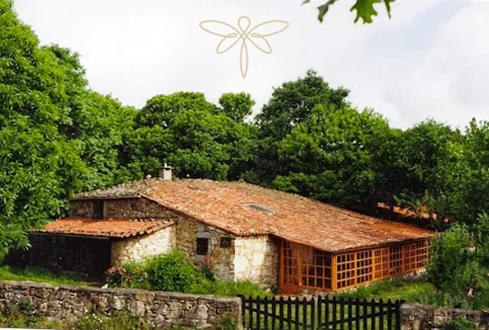

Proceso Crisálida
"Cualquier libro puede describir una técnica, pero una actitud debe ser transmitida por una persona." — Claudio Naranjo
Limpieza de la herida familiar
Es clave en el proceso personal.
Una vía efectiva para curar tu herida familiar, y por tanto, la relación con tus padres. Supone entrar en la programación de la cadena familiar de patrones negativos de comportamiento asumidos en la infancia y que han sido transmitidos de generación en generación.
Así accedes a una visión de tu propia identidad. Para no repetir la vida de tus padres, se entra en esa programación con el fin de limpiarla y no ser ya, ni víctima ni responsable de su transmisión.
Los patrones negativos de conducta se interponen de una manera inconsciente oscureciendo tus relaciones y tu vida cotidiana además de recubrirte de una coraza que acaba aislándote y asfixiándote. De esa forma “actúas” unas veces de víctima, otras de verdugo, a veces invalidando a los demás o autoinvalidándote, -como hacía papá- ó comprando el amor o manipulando –como hacía mamá-. A veces la rabia te inunda y todo ello sin saber por qué.
Por lo tanto con Crisálida desandas el camino, desactivas el dolor incrustado en los espacios físicos y psíquicos que te vieron crecer, reabres y comprendes los comportamientos programados de tus padres, que no tuvieron esta oportunidad. Comprendiendo la imitación/la rebeldía que de ellos has hecho; y por ello comprendes reacciones compulsivas y negativas en el presente.
Este descubrimiento te lleva a la comprensión de tus padres y de ti mismo/a y a través de una inundación en los sentimientos, rompes con las ataduras del pasado y recompones las relaciones con tus padres y con la vida.
El objetivo final de Crisálida es que alcances la comprensión y el perdón. Con la comprensión y el perdón podrás acceder a los procesos transpersonales.
El seminario aborda este proceso desde lo personal: cuerpo, mente y emociones y desde lo transpersonal:la Consciencia.
Está inspirado en el proceso Hoffman y supone una vía intensiva a partir de una síntesis de psicoterapias. Es gratificante el escuchar a los pacientes que hablen de su vida antes y después de Crisálida.
Crisálida se completa con una serie de Reciclajes que ayudan al repaso y profundización del proceso.
INFORMACIÓN:
– Organizado por David Sanmartín. Colabora TEOTS.
– Dónde: Casa da Terra, en Antas de Ulla, Lugo.
